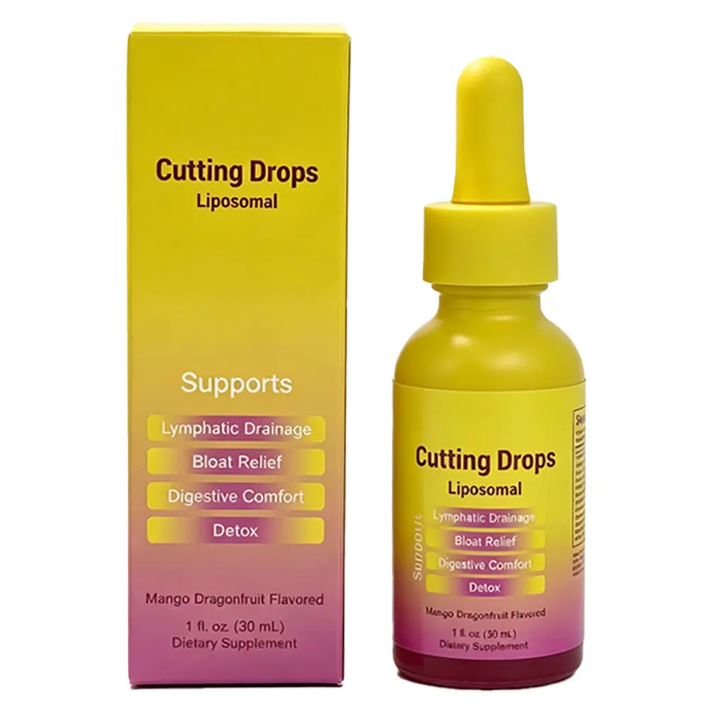
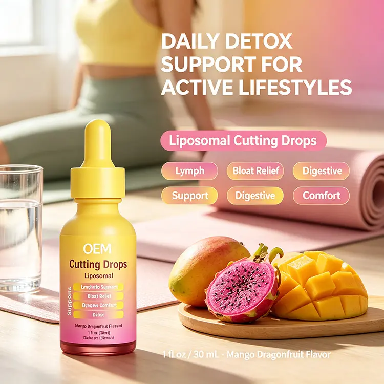
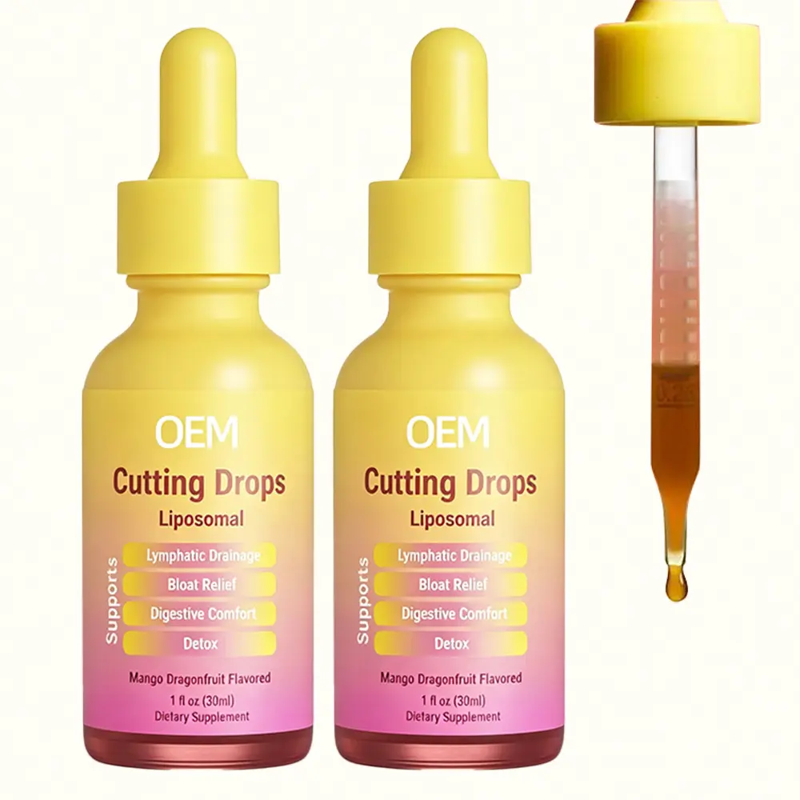

Liposomal Cutting Drops – Mango Dragonfruit
A trending 30 ml mango dragonfruit liquid-drop format, with private-label packaging and OEM / ODM project options.
Product & Cooperation Options
- Trending liquid supplement format
- Custom bottle label and retail carton
- Formula and flavor options available
- Sample and OEM / ODM project support
Product information is provided for B2B cooperation. Final formula, ingredients, serving size, packaging specifications, claims and compliance documents are confirmed for the selected product and destination market.
Private Label & Wholesale FAQ
Can I request samples?Yes. Sample availability and timing depend on the selected formula and packaging.
What is the MOQ?MOQ depends on the product, formula and packaging. Ask for current project options.
Can packaging be customized?Private labels, dropper bottles and retail cartons can be discussed according to project quantity.
Planning a Private Label Liquid-Drops Project?
Review the formula, packaging, samples, MOQ and market-compliance questions to confirm before ordering.
Read the B2B Buyer Guide →Packaging & Product Presentation

